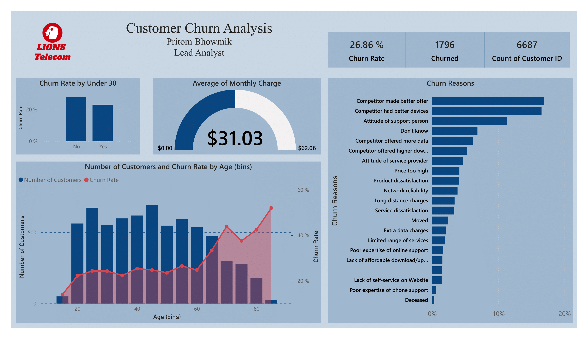
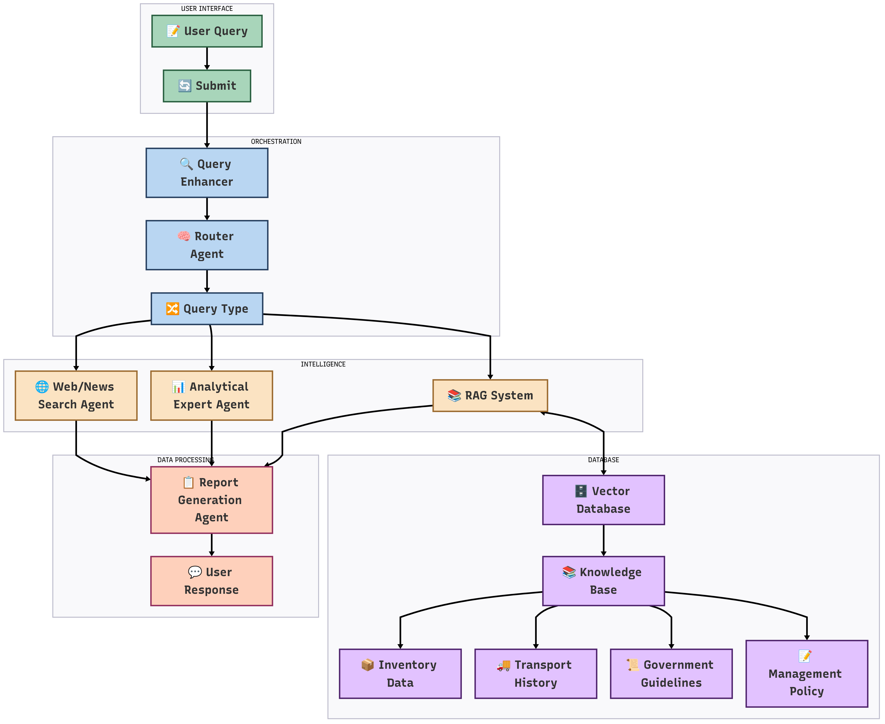
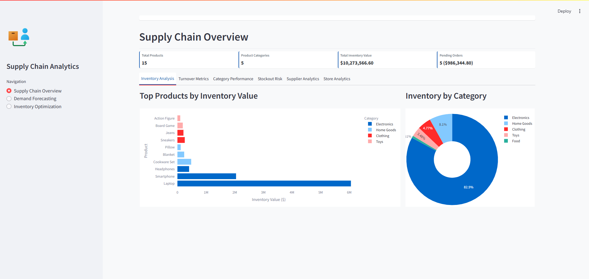

Featured Projects
A selection of my most impactful work in data science and analytics

Customer Churn Analytics Dashboard – Power BI-Driven Strategy for Reducing 27% Attrition
Data-driven approach to identify key drivers of customer churn for a telecom provider with 6,687 users.
26.86% Churn Rate
6,687 Customers

AI-Powered Multi-Agent RAG Chatbot for Pharmaceutical Supply Chain Operations
Engineered a multi-agent RAG chatbot with six specialized AI agents enabling contextual, analytical querying for pharmaceutical supply chain management.
97% Retrieval Accuracy
40-60% Decision Efficiency

IntelliStock: Intelligent Demand Forecasting & Inventory Optimization Platform
Advanced inventory optimization platform leveraging machine learning to improve demand forecasting accuracy and reduce inventory costs.
9.2% MAPE
15% Cost Reduction
.png)
Last Mile Delivery Optimization
ML-powered platform for optimizing delivery routes considering real-time data like traffic and weather conditions.
25% Cost Reduction
30% Faster Deliveries